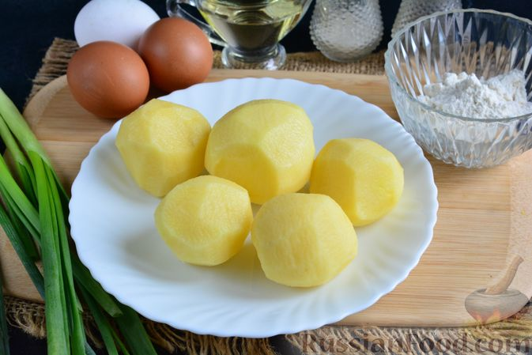
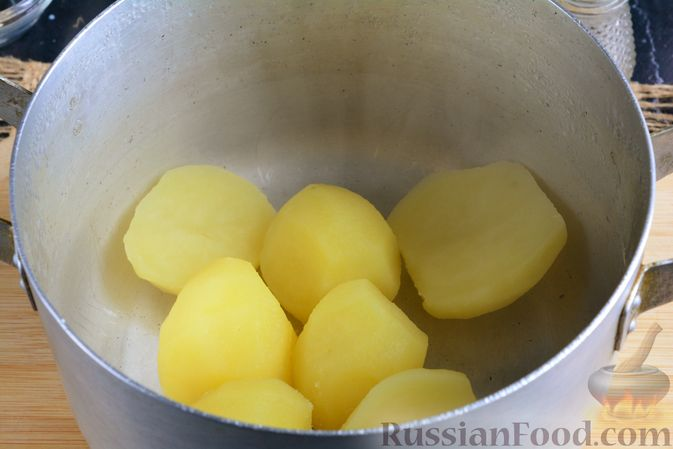
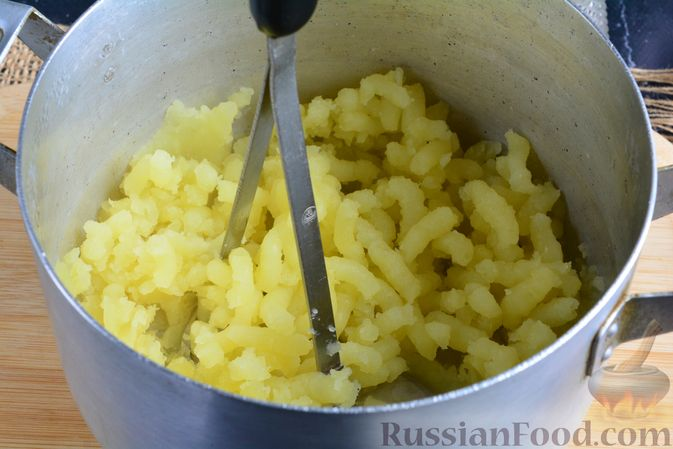
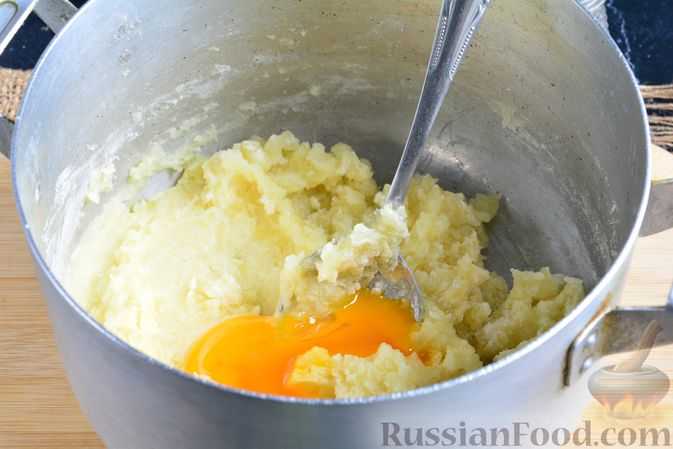
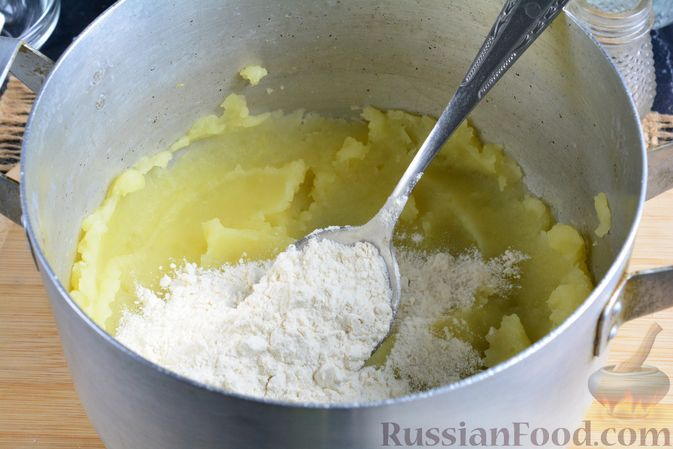
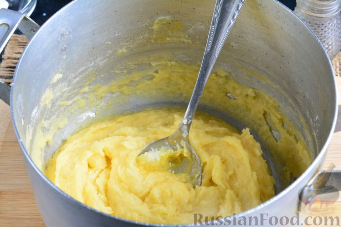
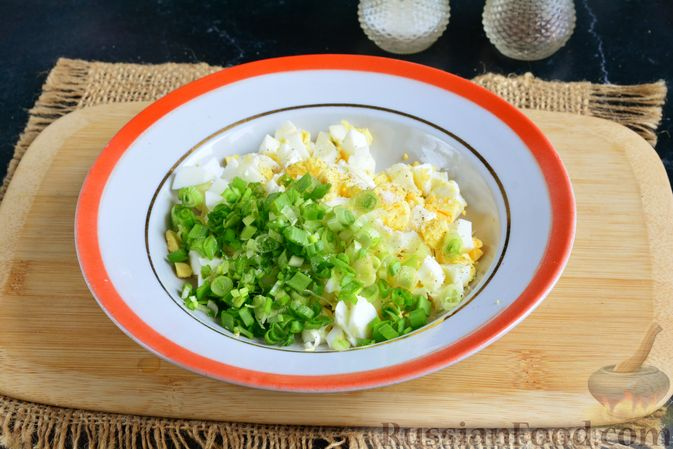
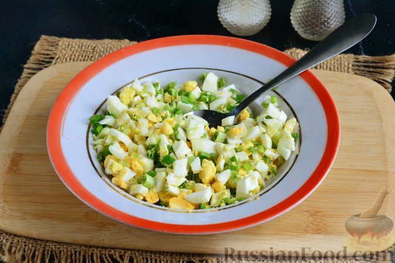
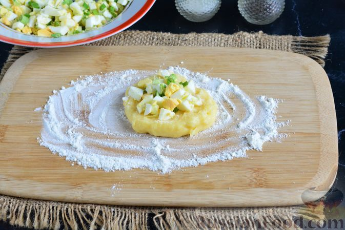

Шаг 1. Подготовьте все необходимые ингредиенты. 2 яйца сварите вкрутую (8-9 минут после закипания воды). Остудите. Картофель очистите и вымойте.

Шаг 2. Крупный картофель разрежьте на несколько частей, небольшой – оставьте целым. Отварите картофель в кипящей подсоленной воде до мягкости, примерно 25 минут. Затем воду слейте.

Шаг 3. Горячий картофель разомните в пюре. Дайте остыть.

Шаг 4. Затем в остывшее пюре вбейте оставшееся яйцо, перемешайте. Можете ещё немного посолить.

Шаг 5. Всыпьте в пюре муку.

Шаг 6. Перемешайте – картофельная масса готова.

Шаг 7. Остывшие яйца очистите. Нарежьте небольшими кубиками и отправьте в глубокую тарелку. Зелёный лук мелко нарежьте. Добавьте к яйцам.

Шаг 8. Начинку перемешайте, при желании поперчите.

Шаг 9. Рабочую поверхность присыпьте мукой, выложите 1/6 часть картофельной массы, формируя небольшую лепёшку. В центр выложите 1-1,5 ч. ложки яичной начинки.
Шаг 10. Слепите зразы, соединяя края над начинкой и придавая овальную форму (как у котлет).
Шаг 11. В сковороде разогрейте растительное масло, обжарьте картофельные зразы по 5 минут с каждой стороны на небольшом огне.
Шаг 12. Горячие зразы сразу подавайте к столу. Хотя они будут вкусными и в холодном виде.